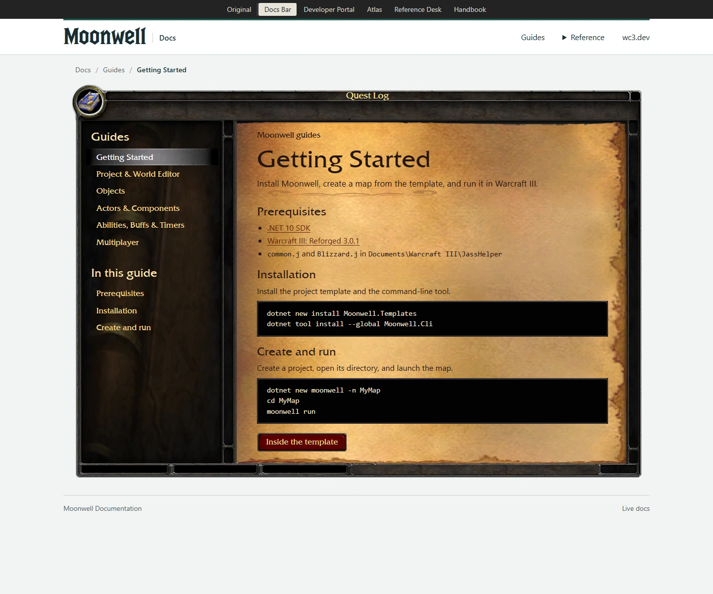
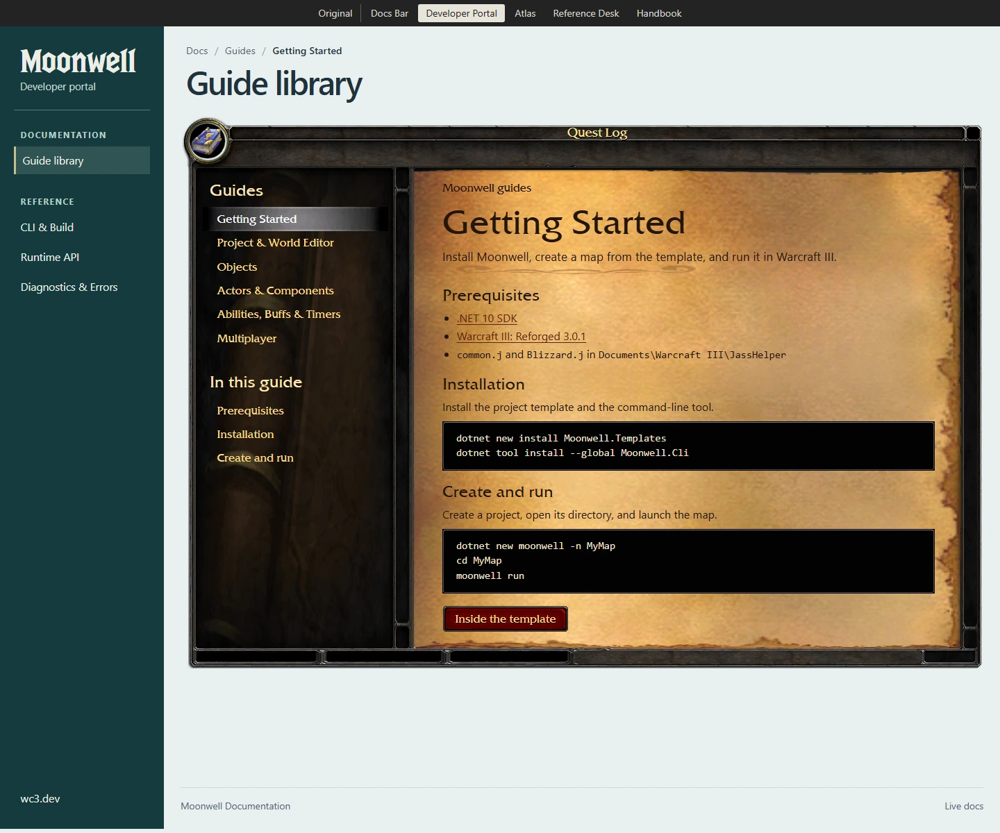
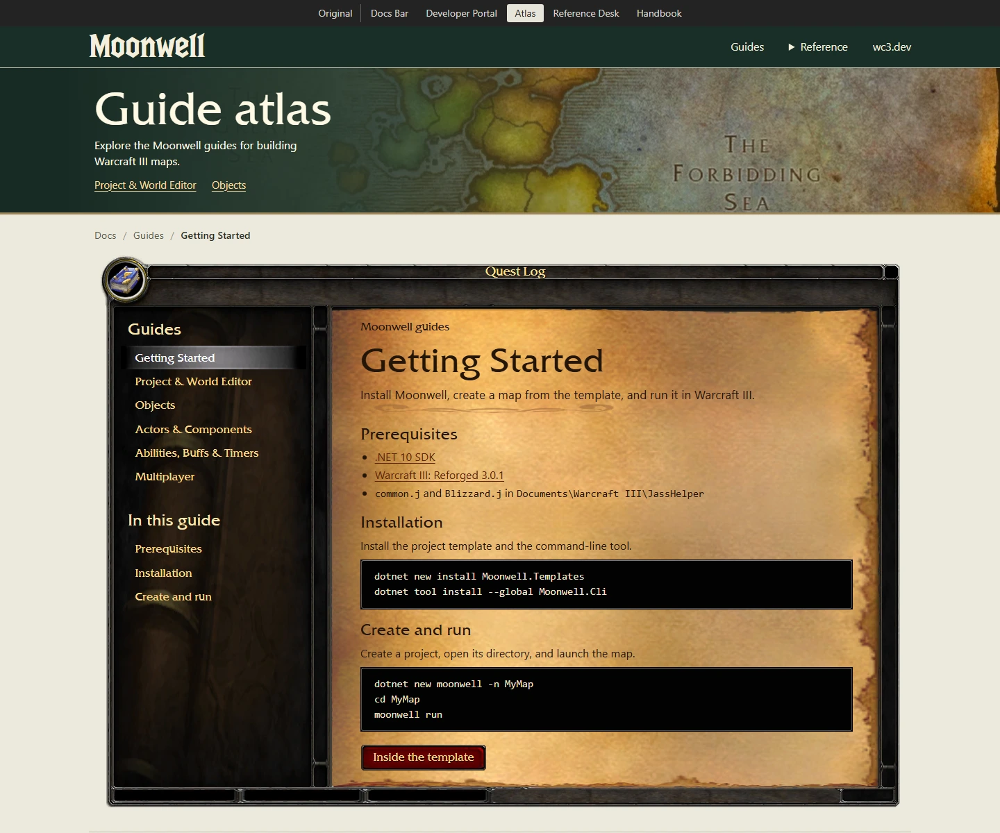
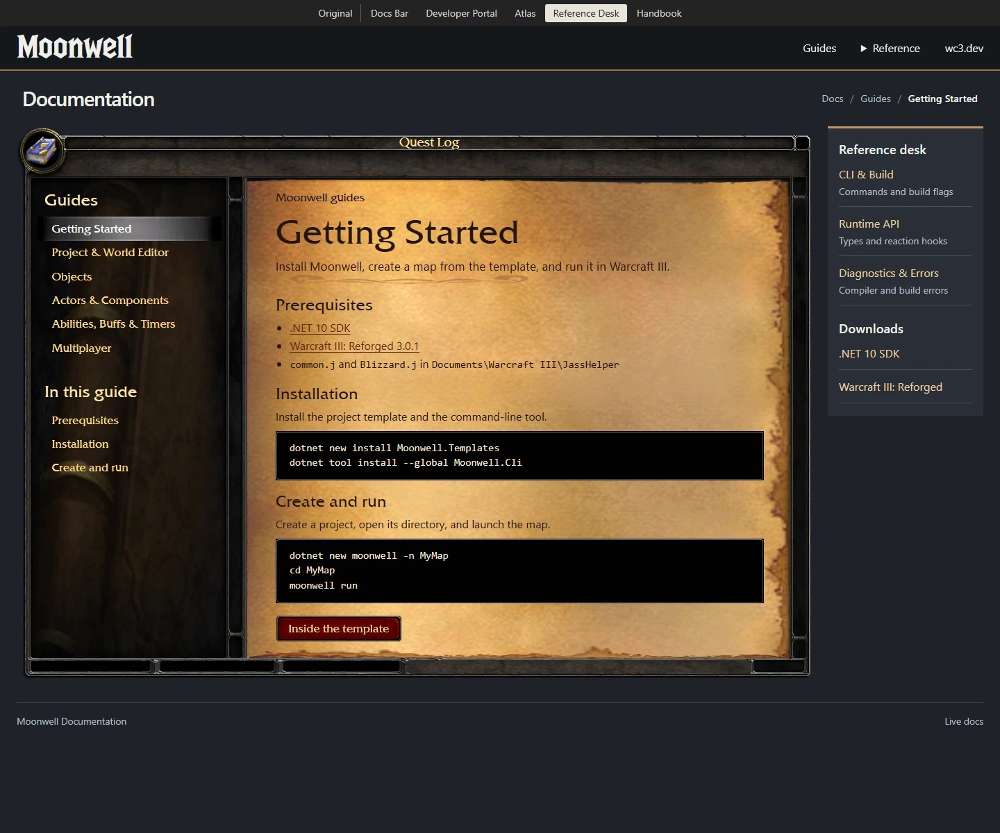
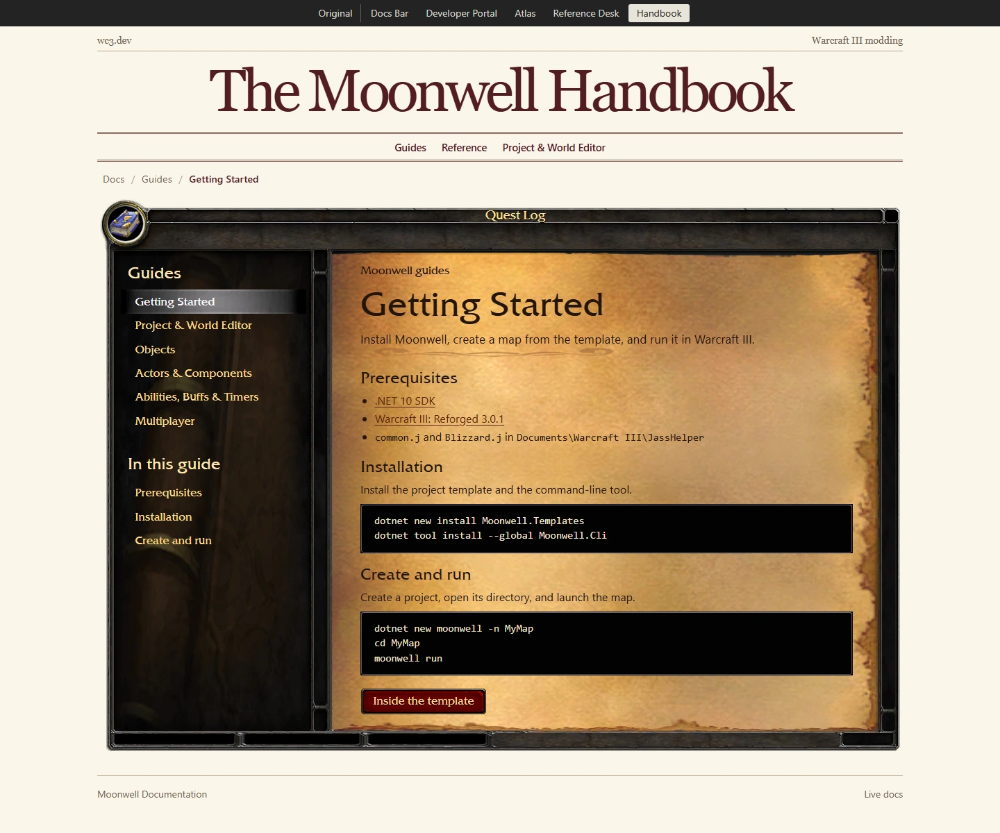

Docs Bar
A slim site header and breadcrumb above the centered window.

Developer Portal
A persistent site rail for the guide library and API references.

Atlas
An Eastern Kingdoms map masthead introduces the guide collection.

Reference Desk
A dark workspace with related references and downloads beside the guide.

Handbook
A book-style masthead and section menu on a cream page.